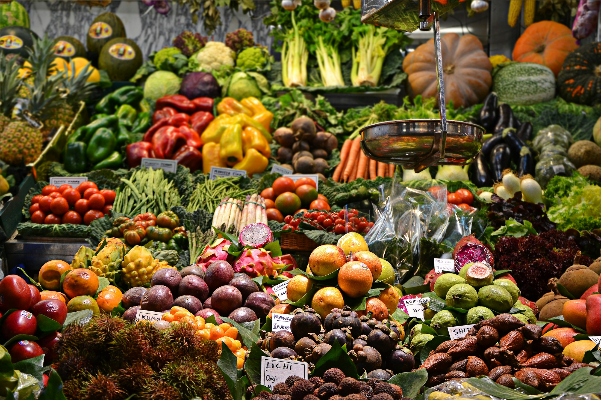

Put your business where customers are.
Co-marketing, launch promotions and priority visibility for founding businesses.
Fidelx is building the connection between the people who sell, the people who buy, and the people who move goods — starting in Otukpo.
Most delivery platforms treat towns like Otukpo as an afterthought. Fidelx was built the other way around — for a market where relationships matter, vendors know their customers by name, and trust is earned block by block.
We're proving the model here first, then expanding from a foundation that actually works on the ground.
Thousands of everyday transactions happen through stalls, shops, riders, phones and conversations. Fidelx gives that activity a connected layer — discovery, payments, fulfilment, tracking and trust.
For partners, that means an opportunity to participate in a system being built around real local behaviour rather than a template imported from somewhere else.
Co-marketing, launch promotions and priority visibility for founding businesses.
Support a locally grounded commerce model with a path beyond delivery.
Technology, payments, media, infrastructure and other capabilities that move the ecosystem forward.
Work with us on local hiring, vendor onboarding and community initiatives.

A stronger local commerce system should mean more than faster delivery. It should give vendors more visibility, riders more opportunities and customers a better way to participate in the businesses around them.
Clear answers first. If your question isn't here, send it anyway — we'll have the conversation.
Local businesses, community organisations, technology providers, payment and infrastructure partners, media organisations and investors who can help us build a stronger commerce network in Otukpo.
Yes. Founding businesses can work with Fidelx on launch campaigns, local visibility, co-marketing and other practical ways of introducing the platform to customers.
Yes. We're open to conversations with people who understand the opportunity in building locally grounded commerce infrastructure and want to discuss the model, roadmap and economics.
Use the contact form below. Tell us who you are, what you do and what you think we could build together. A thoughtful message is enough to start.
Whether you're building a business, investing in the future of local commerce, or looking for a meaningful way to work with Otukpo's growing ecosystem, we'd like to hear from you.